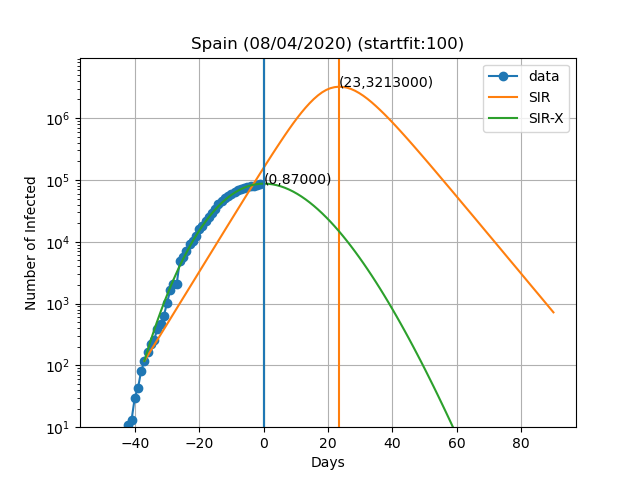
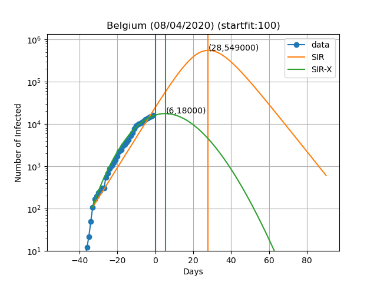
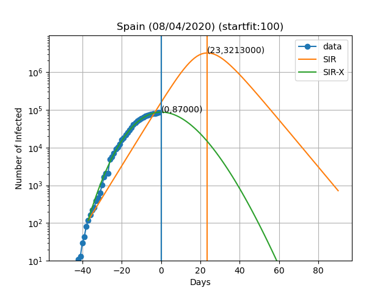
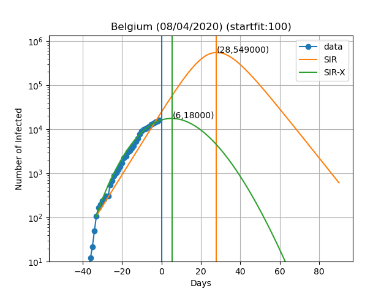

No que respeita à actual pandemia de coronavírus, muito se tem dito sobre a imposição de medidas de quarentena e de distanciamento social para "aplanar a curva" ("flatten the curve" em inglês). A curva refere-se ao número de pessoas infectadas com a doença COVID-19 todos os dias. Uma vez que o número real de pessoas infectadas é desconhecido, utilizar o número de infecções confirmadas para prever a forma como a doença se irá propagar, e portanto o crescimento da curva, é a melhor aproximação que temos.
Então, como se parece esta curva neste momento? Podemos prever como será no futuro?
Uma forma de o fazer é utilizar modelos de compartimentos epidemiológicos, como o modelo SIR. Este modelo compartimenta o número total de indivíduos em três caixas: (S)useptível para infecção, (I)nfectado e (R)emovido; e usa algumas constantes para modelar quantas pessoas se movem entre esses compartimentos. O modelo pode ser resumido na figura seguinte.

Para uma explicação mais detalhada sobre o modelo SIR, pode ler a página da Wikipedia aqui
O modelo SIR para o actual surto do coronavírus tende a sobrestimar o número de infectados ao longo do tempo. Isto porque este modelo não tem em conta os efeitos da quarentena. Não precisa de ser uma quarentena generalizada, desde que as pessoas que se sabe estarem infectadas fiquem isoladas do resto da população. Daí a moto da OMS a "Testar, testar e testar", pois se se testar é possível isolar os infectados e reduzir a propagação da doença. Um modelo que explica a quarentena está representado esquematicamente na figura seguinte.

Onde X é o número de pessoas colocadas em quarentena após terem sido infectadas.
Eu li pela primeira vez sobre este modelo aqui. Modifiquei-o ligeiramente acrescentando a ligação a vermelho (explicarei o motivo abaixo).
Eles fornecem o seu próprio ajuste ao número de casos confirmados, utilizando os dados da Universidade Johns Hopkins disponíveis aqui.
Quis traçar as curvas das pessoas infectadas para além do ponto em que se mostram nas suas previsões, pelo que fiz a minha própria implementação python do modelo SIR-X.
Aqui estão as previsões para alguns países:


 




A curva vertical azul representa o dia no título do gráfico. Os pontos azuis são obtidos subtraindo o número de indivíduos recuperados e mortes ao número de casos confirmados. No modelo SIR-X, o número de infectados é obtido adicionando X e I, desde que a modificação a vermelho esteja presente. As linhas verticais verde e laranja representam o dia em que o número máximo de pessoas infectadas é observado de acordo com o modelo, bem como o numero de infectados nesse dia (Dia,Máx. infectados). O resultado final depende muito sensivelmente do dia em que se começa a resolver as equações diferenciais. Este dia é escolhido de forma a que o numero de infectados seja igual a 'startfit'. O código para gerar estes gráficos está disponível aqui
AVISO: Não sou de modo algum um especialista neste tipo de modelos ou na forma de os resolver. Estes dados destinam-se apenas a fins ilustrativos. Não posso excluir a possibilidade de um erro sistemático e de todos os resultados aqui apresentados estarem errados. Se encontrar tal erro, por favor informe-me para que eu o possa corrigir. Os verdadeiros peritos não se arriscam a fazer previsões de mais de 7 dias e a razão é que previsões tendem a estar errados à medida que o tempo passa. Neste trabalho eu ajusto todas as variáveis do modelo simultaneamente, enquanto os autores originais ajustam apenas as novas variáveis introduzidas no modelo SIR-X em relação ao SIR.
Gostaria de agradecer ao jmpcm pela revisão deste texto.